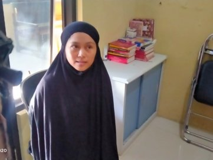

Blog Rsume Indonesia. Semoga pembaca sekalian dalam keadaan sehat dan sejahtera semua... (h1)
Ini adalah demo blog yang artikelnya diambil dari website vice. Server yang digunakan pada website ini menggunakan layanan vercel.
Bunuh Istri Pakai Ular Kobra, Lelaki India Divonis Dua Kali Penjara Seumur Hidup
Sooraj Kumar sengaja melepaskan ular berbisa pada istrinya yang sedang tidur, demi merebut hartanya. Bahkan tokoh antagonis film India tidak sesadis lelaki ini.
Perawat yang Masukkan Deterjen ke Infus Pasien Divonis Penjara Seumur Hidup
Tindakan Ayumi Kuboki menewaskan tiga pasien di Kota Yokohama. Perawat 34 tahun itu beralasan capek bekerja, sampai nekat meracuni pasien.
Pengirim Sate Sianida ke Polisi yang Salah Sasaran Divonis Penjara 16 Tahun
Tindakan Nani Aprilliani yang marah ditinggal menikah seorang polisi di Polres Yogyakarta menewaskan bocah 10 tahun. Keluarga korban menilai hukuman bagi pelaku terlalu ringan.
Perempuan Hamil Dipenggal Ibu dan Adiknya, Lalu Pelaku Selfie dengan Kepala Korban
Pembunuhan keji yang dilakukan ibu anak di India ini motifnya demi menjaga kehormatan keluarga yang marak di negara tersebut.

Kasus Ibu Bunuh Anak Seperti di Brebes Sering Terjadi, Kemiskinan Kerap Jadi Pemicu
Tragedi ibu menggorok tiga anak kandungnya di Brebes memperpanjang daftar tragedi filisida, alias ortu membunuh anak sendiri, yang dari tahun ke tahun rutin terjadi di Indonesia.